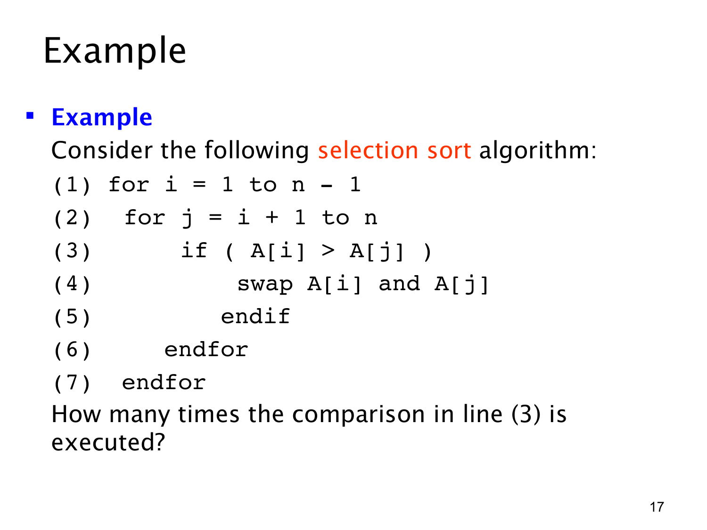

课件第 17 页讲解原文
查看这一页课件

内层循环长度变化时，要把各轮次数相加
这段排序程序依次把位置 i 与后面的位置比较。如果 A[i]>A[j]，就交换这两个元素。题目只问第 (3) 行的元素比较执行次数，并不是问交换次数。
外层 i 从 1 到 n−1，内层 j 从 i+1 到 n。固定 i 时，j 的取值数量为：
n−(i+1)+1=n−i.
因此：当 i=1，要比较 n−1 次；当 i=2，要比较 n−2 次；一直到 i=n−1，只比较 1 次。
不同外层轮次包含不同的比较执行，我们把这些轮次相加：
i=1∑n−1(n−i)=(n−1)+(n−2)+⋯+1=2n(n−1).
例如 n=4 时，要比较的位置对依次是 (1,2),(1,3),(1,4),(2,3),(2,4),(3,4)，共 3+2+1=6 次。也可以理解成：每一对不同位置恰好比较一次。
比较条件成立或不成立，都必须先执行比较才能知道。因此，即使数组已经排好序，第 (3) 行仍然执行相同次数；但第 (4) 行是否交换取决于数组内容，不能把这两个次数混为一谈。
课件称其为 selection sort。这个版本一旦发现更小值就立即交换，与常见“先记录最小位置、每轮最后只交换一次”的写法有所不同，不过这里所数的元素比较次数同样为 n(n−1)/2，随 n 的增长为二次量级。